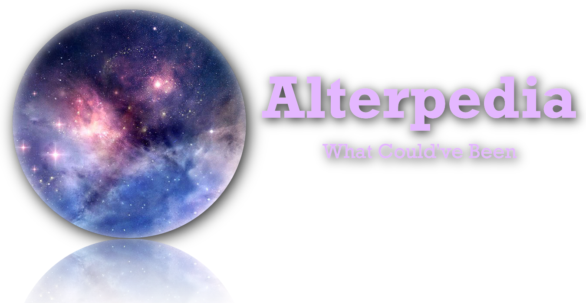

What would happen if Elon Musk weren't here today?
Nelson Mandela?
What would've happened if Adolf Hitler never existed?
Alterpedia is here to give you an unorthodox look back at some of history's most influential people from the dawn of human civilization.
Feel free to choose any of the figures in the directory page or surf through groups in the category page listed above:
Pioneers, Icons, Leaders, Artists, or Titans.
If you have any missing special individuals you would like to be seen,
click the submit page and fill out the form and your specified individual will be reviewed under our consideration guidelines before being added.
Pioneers: those who have helped make groundbreaking progress in science or society
Icons: those who are looked upon as great entertainers in our culture
Leaders: those who have had a profound impact in politics
Artists: those who have left a notable imprint in the world of arts
Titans: those who have revolutionized industries in their respective fields